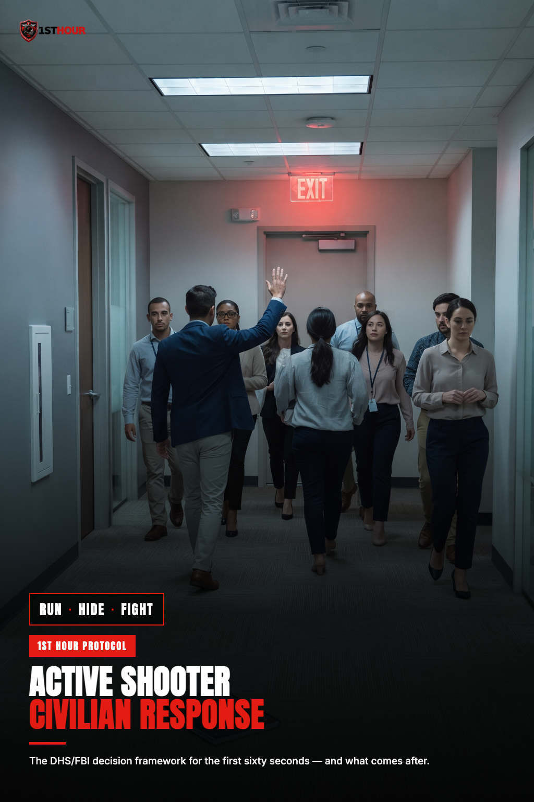

Active Shooter — Civilian Response
A calm, practical decision framework for the first sixty seconds of an active-threat situation — Run, Hide, Fight, and what comes after — so panic doesn't fill the gap in the first seconds.

1. Why Preparation Matters
This book isn't here to help you predict when or where an active-shooter situation might happen. Nobody can do that with any reliability, and trying to is a poor use of your attention. What this book actually does is much narrower and much more useful: it gives you a decision framework you can recall instantly, under stress, so that the first few seconds after you realize something is wrong aren't spent freezing or improvising from scratch.
Acute stress does something specific and well-documented to decision-making: it narrows attention, slows deliberate thought, and pushes people toward whatever response is already loaded and ready — including, for a meaningful number of people, no response at all. Public safety researchers call this the "freeze" response, and it's one of the most consistently observed reactions in real incidents, not a sign of cowardice or poor character. The single most effective countermeasure isn't bravery — it's rehearsal. A framework you've already thought through, even briefly, gives your brain something to reach for instead of nothing.
The framework in this book — Run, Hide, Fight — comes from the U.S. Department of Homeland Security and is echoed in FBI civilian-preparedness guidance. It was built specifically for ordinary people in ordinary buildings: offices, schools, retail spaces, places of worship. It is not tactical or operator training, and this book doesn't try to make it into that. It's a decision order — what to consider first, second, and only as a last resort — not a set of equally weighted options.
2. The Run-Hide-Fight Framework
Run, Hide, and Fight are not three equally good options to pick from — they're a decision sequence, evaluated roughly in that order, based on what's actually possible in your specific situation at that moment. The large majority of real incidents resolve at Run or Hide. Fight is a genuine last resort, not a first instinct to reach for, and this book treats it that way throughout.
This is a decision order, not a menu. Ask "can I run safely?" first. If not, ask "can I hide securely?" next. Fight is what's left when the answer to both is genuinely no — see Section 5 for exactly what that means and doesn't mean.
A few things worth understanding about how this decision actually plays out in real time:
- The right answer can change as the situation develops. You might start by hiding and later find a safe moment to run. You might start moving to run and have to pivot to hiding if your path closes off. The framework isn't a one-time choice — it's a lens you keep applying as things change.
- Different people in the same room can reasonably make different choices. Someone near a clear exit and someone across the room near a lockable door aren't necessarily facing the same decision. Don't assume everyone should do what you're doing.
- You don't need certainty to act. Waiting for full information before moving is itself a choice, and often the worse one. Act on the best read of the situation you can get quickly.
3. Run
If you can get out safely, get out. Evacuation is the option that removes you from danger fastest and most completely, and it's the right call whenever it's genuinely available to you.
- Leave everything behind. Your bag, your laptop, your coat — none of it matters. Every second spent gathering belongings is a second of exposure you didn't need to accept.
- Know more than one way out. Whenever you're in an unfamiliar building — a venue, a store, a new office — it costs almost nothing to notice where the exits are, not just the door you walked in through. That habit is the entire value of this section; it's what makes "run" a real option instead of a hope.
- Keep your hands visible and empty as you move. This matters twice: it helps you move faster without fumbling for objects, and it helps anyone else you encounter — especially arriving law enforcement, covered in Section 6 — immediately recognize you as not a threat.
- Help others evacuate only if it doesn't slow you down. Encouraging people near you to come along is reasonable. Stopping to physically assist someone who is not moving, at the cost of your own ability to get out, is a judgment call this book won't make for you — but understand that hesitating here has a real cost.
- Don't let the crowd's direction override your own read of the situation. People tend to move where others are moving. If you have a clear reason to believe a different direction is safer, trust that over the herd.
- Call 911 once you're safe — not while you're still moving, if you can avoid it. A call made while running is often garbled, drops important details, and slows you down. Get to safety first, then call and give dispatchers a clear, calm account: your location, the threat's last known location and description if you have it, and how many people are with you.
4. Hide
If evacuation isn't safe — the threat is between you and every exit you know of, or you simply don't have a clear path — the next option is to hide, quickly and securely, in a way that keeps you out of sight and behind something that slows down anyone trying to get to you.
Finding and securing a room
- Get out of the hallway or open area and into an enclosed room. A room with a door that locks is far better than one that doesn't; a room with no door at all is a last choice, not a real hiding spot.
- Lock the door if it locks. If it doesn't, barricade it. Push heavy furniture — a desk, a filing cabinet, a table — against the door. The goal is to make entry slow and loud, not silent and easy.
- Turn off the lights. A dark room reveals less about whether it's occupied.
- Silence your phone completely — including vibration, not just ringer. A buzzing phone against a desk or in a pocket is audible in a quiet room. Do this immediately, and tell others with you to do the same.
- Move away from the door and out of sightlines from any window. Get low, get behind solid furniture or a wall section, and stay out of direct line-of-sight from the door's window or gap, if it has one.
- Stay completely silent. No talking above a whisper, no answering phone calls out loud — text 911 or a contact if your area supports text-to-911, rather than speaking.
- Do not open the door for anyone until you're certain it's safe. Law enforcement clearing a building will identify themselves clearly and repeatedly; a shooter attempting to gain entry may claim to be someone else. If you have any doubt, don't open it — let officers use their own methods to clear the room.
What makes a hiding spot good or bad
| Good hiding spot | Bad hiding spot |
|---|---|
| Interior room, away from exterior windows and glass doors | A room with large windows facing a hallway or exterior walkway |
| A door that locks, or heavy furniture available to barricade it | No door, an open cubicle area, or a door that can't be secured at all |
| Solid walls and furniture between you and the door | A dead-end space with no cover and no second way to reposition |
| Room for the group to spread out of a single sightline through the door | Everyone clustered directly in view of the doorway or window |
5. Fight
Fight is the last resort in this framework — not because it never works, but because it's only the right call when running and hiding have both genuinely stopped being options and you are in imminent danger. This section is intentionally the shortest in this book. That's not an oversight; it reflects how rarely this stage is actually reached compared to Run or Hide.
If you reach this point, the goal is narrow and specific: create an opportunity to escape, or disrupt the threat's ability to continue acting, long enough for you and others to get away. This is a survival action aimed at buying an opening, not a contest to win or a wrong to correct — keep that framing, because it's what actually keeps the response focused and effective under extreme stress.
- Commit fully once you've decided. A half-committed action is often worse than none. If this is genuinely the only option left, act with full intent and full effort.
- Act as a group if others are present. Multiple people acting together to create a distraction or disruption — throwing objects, shouting to disorient, moving simultaneously from different directions — is far more likely to create the opening you need than one person acting alone.
- Use whatever is available to create distance or disruption. A fire extinguisher, a chair, a heavy book, scalding coffee — ordinary objects, used to interrupt the threat's ability to see clearly, move freely, or aim, buy the seconds needed to get away.
- The moment an opening appears, take it. The point of every action in this section is to create a gap you can escape through — not to continue engaging once that gap exists.
6. When Law Enforcement Arrives
Officers responding to an active-threat call are trained to move directly toward the threat as fast as possible — their first priority is stopping the danger, not identifying who's a victim, who's a witness, and who might still be a threat. That means the first moments of contact with arriving officers are highly structured, and your job is to make their read of you as fast and unambiguous as possible.
- Keep your hands visible and empty at all times. Raise them, open, where officers can see them clearly. Don't reach for a phone, a bag, or anything else until you've been told it's safe to.
- Follow instructions exactly and immediately, even if they seem repetitive, brusque, or don't match what you'd expect. Officers may need to treat everyone in the area as an unknown until the scene is fully assessed — this isn't personal.
- Don't stop to ask questions or explain the situation while officers are still moving toward the threat. There will be time for that once the immediate danger is addressed; slowing them down in the moment isn't the way to help.
- Never run toward arriving officers, even out of relief or a desire to reach safety faster. Move as instructed, and let them come to you or direct you to a specific path.
- Don't carry anything that could be mistaken for a weapon. Drop bags, tools, or any object in your hands before officers reach you — a raised phone or an unidentified object in a hand is exactly the kind of ambiguity that costs precious seconds in a high-stress encounter.
7. Treating the Wounded Once the Scene Is Secured
The single most important rule in this section is a sequencing rule, and it comes before any technique: confirm the scene is safe — normally signaled by law enforcement — before you render aid. A rescuer who becomes a second casualty doesn't just fail to help; they add to the problem responders now have to solve. Wait for law enforcement to indicate it's safe to move and assist, unless you are already in a secured area and certain no ongoing threat remains.
Once the scene is confirmed safe, this book does not re-teach bleeding-control or gunshot-wound technique from scratch — two other protocols in this library cover that in depth, and the right move is to use them rather than duplicate them here:
What this section adds, specific to an active-threat scene:
- Triage by severity if more than one person is hurt — the same principle covered in the bleeding-control protocols applies here: address the most immediately life-threatening bleeding first.
- Expect to be directed by responding officers or EMS on where it's safe to move, who to help first, and where to bring injured people for further care — follow that direction rather than improvising your own triage plan if one is being given.
- Preserve what you can without delaying care. If it's safe and doesn't cost meaningful time, avoid unnecessarily disturbing the scene — but a person's safety and bleeding control always take priority over evidence preservation.
8. Psychological Aftermath
A strong reaction after surviving or witnessing an active-threat event is common and expected — not a sign of weakness, and not something you're expected to simply push past. Difficulty sleeping, intrusive memories, jumpiness, irritability, and emotional numbness are all normal responses to an abnormal event, in the days and weeks that follow.
This book is a first-aid guide, not a mental-health resource, and it won't attempt to counsel you through that process here — that's a job for a trained professional, not a page in an e-book. What it will do is point you toward the kind of help that actually works:
- Your employer's Employee Assistance Program (EAP), if you have one — most offer confidential, short-term counseling at no cost, specifically for situations like this.
- 988 Suicide & Crisis Lifeline (call or text 988) — available nationwide, 24/7, for anyone in acute distress, not only in a suicide-specific crisis.
- A licensed therapist experienced in trauma or critical-incident response, found through your insurance provider, a primary care referral, or a community mental health center.
- Children especially benefit from professional support after this kind of event — a pediatrician or school counselor can help identify the right resource for their age.
9. Essential Items Checklist
Most of this protocol is behavioral, not equipment-based — Run, Hide, and Fight all depend far more on decision-making than on gear. A short list of items is still worth having within reach, mostly for the "treating the wounded" stage in Section 7 and for staying reachable during Run/Hide.
- Commercial tourniquet & hemostatic gauze — Section 7. See Severe Bleeding & Hemorrhage Control for full technique.
- Fully charged phone / portable battery bank — Sections 3 & 4. A dead phone means no 911 call and no way to receive updates while hiding.
- Non-latex gloves — Section 7, worn before contact with any blood, once the scene is confirmed safe.
10. Disclaimer
This content is general civilian-safety guidance based on publicly available DHS/FBI Run-Hide-Fight materials. It does not constitute medical advice, tactical training, or professional instruction, and it is not a substitute for a certified active-threat preparedness course, which we strongly recommend taking in person.
This book is not legal advice, and it does not address use-of-force or self-defense law, which varies significantly by state. Nothing in Section 5 ("Fight") or anywhere else in this book should be read as a statement about what actions are legally justified, permitted, or protected in any specific situation or jurisdiction. If you have questions about what actions are legally permissible where you live, consult a licensed attorney in your state.
In any active threat, call 911 (or your local emergency number) the moment it is safe to do so. Nothing in this guide should delay that call.
This book, like every title in this library, is not a substitute for professional training or emergency services. 1st Hour and its parent company make no warranty, express or implied, regarding outcomes from applying the information in this guide, and disclaim liability for actions taken based on its contents to the fullest extent permitted by law.
Editor's note: this edition reflects content as of August 25, 2026. 1st Hour periodically revises protocol guides as best practices evolve — visit 1sthourprotocols.com/active-shooter for the current edition and to re-download the latest PDF.